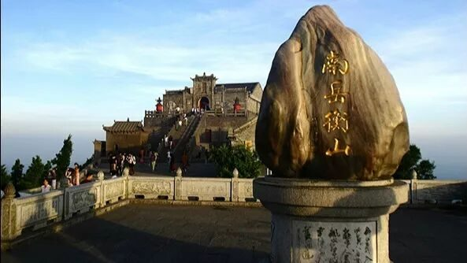
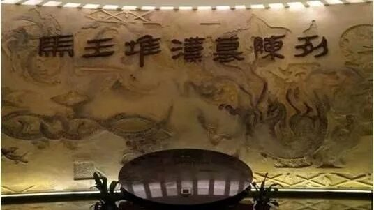

【行者无疆 言念潇湘】精品文化科普（三）
精品文化科普推送（三）
你许我与共走过千山万水，
看尽世间繁华，
过眼景色，云烟不散；
你许我一同踏遍寸寸土地，
纵览上下青史，
王侯将相，铭刻不朽。
而今，
我愿许你携手体悟，
一朝一夕间醉人的潇湘。
不知，可否？


位于长沙、株洲、湘潭三市交汇处，自然景色秀美，历史底蕴深厚，文化源远流长。
群山环抱，碧水如玉，峰峦秀削，古干虬枝，绿荫匝地。被誉为“湖南九寨、人间瑶池”。
//////////

中国“五岳”之一，坐落衡阳、湘潭两盆地间。
衡山地处星座二十八宿的轸星之翼，“变应玑衡”，“铨德钧物”，犹如衡器，可称天地，故得名衡山。

属于长江流域洞庭湖水系，是湖南省最大河流，也是长沙的母亲河。
滔滔南来，汨汨北去，过昭山而进入长沙城，经三汊矶又转向西北，再过岳阳入洞庭，湘江两岸赤壁如霞，白沙如雪，垂柳如丝，构成了长沙美丽的沿江风光带。
//////////

位于湖南省长沙市，是西汉初期长沙王丞相利苍及其家属的墓葬。墓葬共分为三座，结构宏伟复杂，棺椁漆绘流云漫卷，体态生动，活灵活现。
马王堆汉墓为研究西汉初期手工业和科学技术的发展，以及当时的历史、文化和社会生活等方面，提供了极为重要的实物资料，对我国的历史和科学研究均有巨大价值。
原名陈庶康，生于湖南湘乡，是中国无产阶级革命家、军事家，中国人民解放军大将，国家和中国人民解放军的优秀领导者。新中国国防科技、教育事业的奠基者之一。
陈赓1922年加入中国共产党，历经多次战役为人民的解放事业立下汗马功劳。
//////////
广泛流行于长沙、湘潭一带，民间俗称“大戏班子”、“长沙班子”或“湘潭班子”。
湘剧的表演程式突出而不受约束、角色类别分明而不受局限。湘剧多从生活角度出发，将自身与民间艺术和地方语言巧妙结合，使之处处均可展现湖南民间地方特色。
湖南长沙传统的特色名吃，又称其为臭干子。
色墨黑，外焦里嫩，鲜而香辣。焦脆而不糊、细嫩而不腻、初闻臭气扑鼻，细嗅浓香诱人。简而言之:异臭奇香！

时过境迁，
斑驳了昨日繁花，
沧桑了峥嵘岁月，
再回首，
往昔记忆如丝雨般点滴出脑海的涟漪。
未曾想过赴一场如此浪漫的文化约会，
不觉间，
我们已在路上。
渺然兮于怀，望君天一方。
愿携行者之手，共悟曼妙潇湘。来源 | 行者无疆实践团
文字 | 胡至鸿
排版 | 吕丰元
审核 | 段智然 康艳虎
行者无疆实践团
QQ：2758025831

随行者一起认识世界
长按二维码